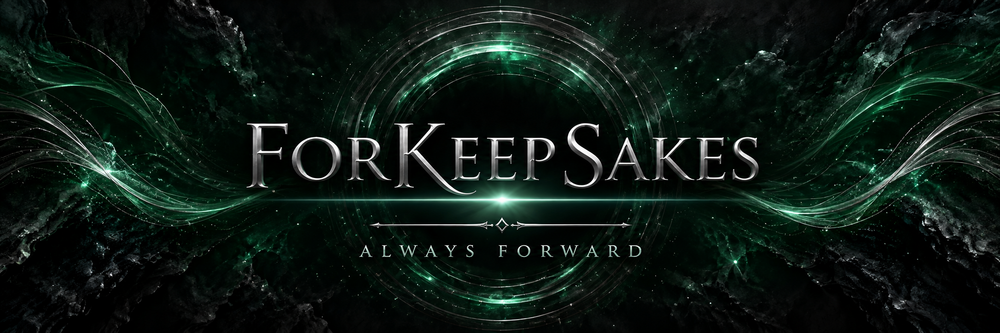

02 / Fantasy · Meaning · Experiments
Creative Explorations
Dark fantasy, unexpected creatures, meaningful stories, and the creative detours between them.
Collection in preparation
The digital creator’s workshop & gallery
Explore digital art and cinematic edits. Discover the choices behind the work. Build your own creative practice, one idea and one new skill at a time.
Inside the gallery
Collections of visual storytelling, each with its own atmosphere and direction.
01 / Art · Motion · Symbolism
A journey through the signs, interpreted through digital art, movement, and sound.
Explore the collection02 / Fantasy · Meaning · Experiments
Dark fantasy, unexpected creatures, meaningful stories, and the creative detours between them.
Collection in preparationFrom inspiration to practice
Every finished piece begins with a question. How do I describe this idea? Where should the viewer look? What gives this moment its feeling? Start with one choice, then build on it.
Learn
Explore prompting, composition, camera language, and editing through clear explanations and small experiments.
Teach
Make room for the attempts, adjustments, and discoveries. A lesson you share may help another creator begin.
Do
Practice with intention. Try a technique, watch what changes, and carry that discovery into your next creation.
A small place to start
Open a prompt below and use it to guide your next experiment.
Choose a subject, a setting, and a material. Describe them clearly before adding lighting and framing.
For example: an ancient tree in a moonlit forest, its bark formed from obsidian and woven green light.
Try changing only the material. Compare how that changes the character of the image.
Pick one focal point. Use framing, contrast, or light to bring attention to it.
Compare a wide view with a close-up of the same subject. What does each version reveal?
In your editor, place a position or scale keyframe at the beginning and another at the end.
Try a gentle push toward the focal point. Watch it back and adjust the speed until the movement suits the scene.
Always Forward
ForKeepSakes Studios is a workshop in motion. As I learn, this space grows—with new artwork, editing experiments, and practical lessons to share.
The aim is simple: become a little more capable with every creation, and help others find their own way forward.
Will · Creator, ForKeepSakes StudiosIdeas grow through connection
Have a creative question or a collaboration idea? Join the conversation.